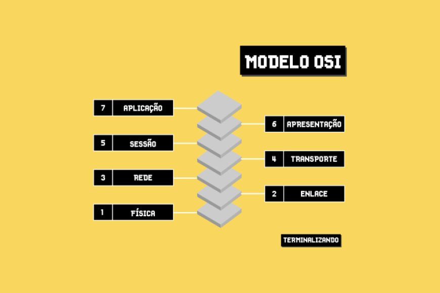
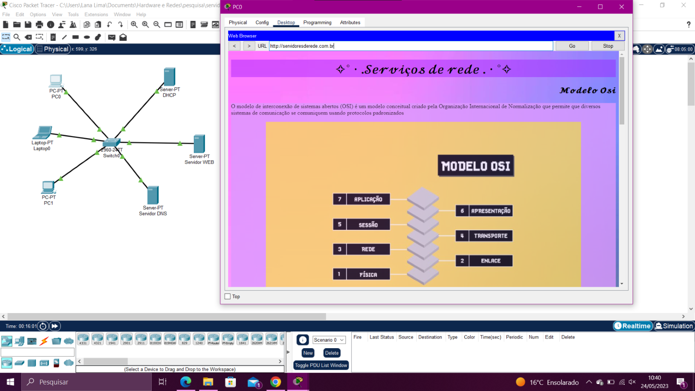

O modelo de interconexão de sistemas abertos (OSI) é um modelo conceitual criado pela Organização Internacional de Normalização que permite que diversos sistemas de comunicação se comuniquem usando protocolos padronizados

.
TCP/IP é um conjunto de protocolos que possibilita a comunicação entre computadores e servidores, formando a Internet. Ele combina o Protocolo de Controle de Transmissão (TCP), responsável pela transmissão de dados, com o Protocolo de Internet (IP), que identificar os computadores e servidores.

User Datagram Protocol (UDP) é um protocolo de Internet mais simples e sem conexão, no qual os serviços de verificação e recuperação de erros não são necessários.
.
Protocolo de Transferência de Arquivos é um protocolo padrão/genérico independente de hardware sobre um modo de transferir arquivos/ficheiros e também é um programa de transferência
.
O DNS (Domain Name System – Sistema de nome de domínio) converte nomes de domínio legíveis por humanos (por exemplo, www.babyyoda.com) em endereços IP legíveis por máquina (por exemplo, 192.0.2.44).
O DHCP, Dynamic Host Configuration Protocol, é um protocolo de serviço TCP/IP que oferece configuração dinâmica de terminais, com concessão de endereços IP de host, máscara de sub-rede, default gateway, número IP de um ou mais servidores DNS, sufixos de pesquisa do DNS e número IP de um ou mais servidores WINS.
.
HTTPS é uma implementação do protocolo HTTP sobre uma camada adicional de segurança que utiliza o protocolo TLS/SSL. Essa camada adicional permite que os dados sejam transmitidos por meio de uma conexão criptografada e que se verifique a autenticidade do servidor e do cliente por meio de certificados digitais.
O HTTPS é uma sigla para Hypertext Transfer Protocol Secure. Essa é uma versão de protocolo idêntica ao HTTP, com a diferença de ser sobre uma camada totalmente SS
Um web server é um sistema computacional que hospeda e fornece acesso aos conteúdos e aplicações através da internet. Geralmente contratado como um serviço, esse servidor recebe e processa as solicitações feitas por navegadores através de protocolos de rede como o HTTP ou HTTPS.
|
No aplicativo do Cisco Packet Tracer, eu hospedei esse site em um WEB-SERVER e mudei o nome do endereço IP para um nome de site "serivdoresderede.com.br", através do DNS-SERVER; Pelo PC0 consigo acessá-lo.
